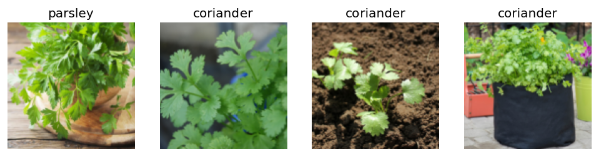
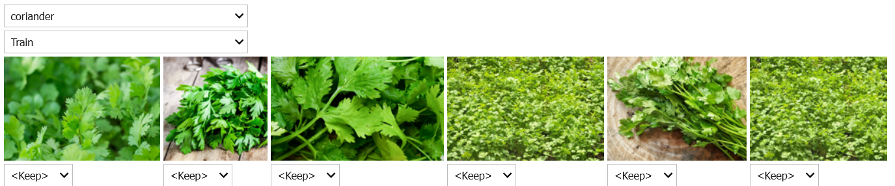
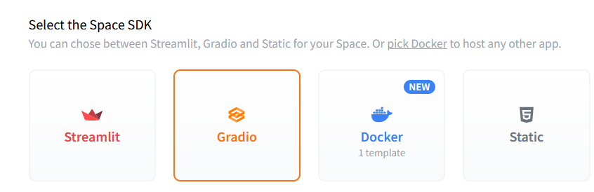
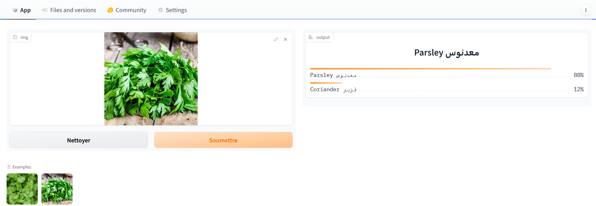

import fastbook
from fastbook import *
from fastai.vision.widgets import *A coriander قزبر vs معدنوس Parsley Classifier
fastai
ml
classification
Coriander قزبر and parsley معدنوس are two staple ingredients of Moroccan cuisine, our moms have the superpower of easily distinguishing between them, but us mortals cannot.
In lesson 2 of Deep Learning for Coders 2022 part 1, Jeremy presented a simple image classification model for grizzly, black and teddy bears. I will be using a similar model to help us on this strenuous and confusing task.
Step 1: Training the Model
First we need to gather the data and train a model to classify our targets. We begin first by important all the relevant libraries:
We then search on DuckDuckGo for images of both coriander and parsley.
plant_types = 'coriander','parsley'
path = Path('plants')
if not path.exists():
path.mkdir()
for o in plant_types:
dest = (path/o)
dest.mkdir(exist_ok=True)
results = search_images_ddg(f'{o}')
download_images(dest, urls=results)plant_types contains our two category names
path is the path where our images will be downloaded
Then we loop over our categories and create respective folders for each of them
We then perform a DuckDuckGo image search with the function search_images_ddg and we store all the urls of the results in the variable results, we then download all the images in the category folder.
It’s standard procedure to check for images that failed to download using the following bit of code:
fns = get_image_files(path)
failed = verify_images(fns)
failedwe then use unlink to remove said failked images.
failed.map(Path.unlink)One of the amazing features of fastai are Datablocks and DataLoaders.
A Data block is nothing more than a pipeline for data assembly. When you initially create a DataBlock, you won’t need to specify any data. What you will need to specify, however, is a set of rules for how to treat your data when it does flow in. It doesn’t care about what you’ll do with it, it just cares about how you want it gathered, classified and split.
In order to create a Data block you need to specify
- what types of data to expect for your input (aka features) and target variables (aka labels)
- how to get the data
- how to differentiate features from the target variables,
- how to split the data for training (train & validation set) Let’s see how to do that. In our case our DataBlock looks like this:
plants = DataBlock(
blocks = (ImageBlock, CategoryBlock),
get_items = get_image_files,
splitter = RandomSplitter(valid_pct = 0.2, seed = 42),
get_y = parent_label,
item_tfms = Resize(128))The four main steps mentioned above are exactly the first four (required) arguments of a DataBlock:
blocks: is where you specify the types of data your model will work with. Usually you will specify at least two blocks: one that represents your independent (input) variable, and one that represents your dependent (target) variable. You can also specify multiple input/output variables.
get_items: a function that will actually go and pick up the data when necessary (more on this later)
splitter: how the data will be split between training and validation set. The seed is optional and only added for reproducibility.
get_y: how to extract the target (dependent) variable from the data. In our case, this will be by looking at the parent folder, fast.ai provides a built in function called parent_label.
item_tfms: is an optional argument that we can include to specify any additional processing that needs to be carried out when we flow our data through. In this case, we will resize all images to 128x128. We can specify other transforms, such as item_tfms=Resize(128, ResizeMethod.Squish)) which will resize and squish our images to fit, or item_tfms=Resize(128, ResizeMethod.Pad, pad_mode=‘zeros’) to resize and pad any leftover space with black. This method is incredibly powerful as it also supports data augmentation. This is beyond the scope of this blog post, but just know that item_tfms allows you to pre-process your data before it hits your model.
Now that we’ve defined a DataBlock, and we’ve specified exactly how our data needs to be structured, categorized and processed, we can start actually feeding in the data for our model to train on. We load this data in with a Data loader. This is where DataLoaders come in. A DataLoaders is an iterator class that our DataBlock will call to load data according to the rules that we’ve specified in specific chunks (called batch size).
A DataLoader in fast.ai is a superset of the PyTorch DataLoader, with more helpful callbacks and flexibility. Whereas the Data block knows how to structure the data, the Loader knows how to work with it in the context of training a machine learning model i.e. how much to feed to the model at once (batch size), how many processes to spawn to load the data, how much memory to allocate and many more.
A DataLoaders (note the plural), is a thin class that automatically generates multiple DataLoader (singular) objects based on the rules specified in our DataBlock.
Now let’s create our own:
path = Path('plants')
dls = plants.dataloaders(path)our dataloaders are now created, let’s visualize some of our data.
dls.valid.show_batch(max_n=4, nrows=1)
Now let’s train our model by using the vision_learner, but first what is that?
A learner is a fastai component that groups together a model, some Dataloaders and a loss_function to handle training. A vision_learner is a learner that handles computer vision tasks.
learn = vision_learner(dls, resnet18, metrics=error_rate)
learn.fine_tune(4) this vision_learner will use the DataLoaders we created, and will also use a pretrained model resnet18 and error_rate (1 - accuracy) as metric.
Then we use fine_tune to fine tune our pretrained model to our coriander and parsley data for 4 epochs.
If you’ve already done a classification task, you may be shrugging right now and saying “What is he doing? training a model without any data cleaning?”.
That’s what I said myself when I was watching Jeremy doing his classification, then he said what I consider the most interesting take away of this lesson, I don’t remember the exact words but he said something like this:
> You should train your model first, then clean the data later. Training the model on unclean data will show you where the model struggles and helps you to clean the data better and retrain later on a clean data to have better results.
Now That we trained our model on unclean data, we need to see where he did mess up the most. We can do that by using the following code:
interp.plot_top_losses(5, nrows=1)fastai includes a handy GUI for data cleaning called ImageClassifierCleaner that allows you to choose a category and the training versus validation set and view the highest-loss images (in order), along with menus to allow images to be selected for removal or relabeling:

The problem I had with this dataset, was that many images were of bottles containing dry coriander/parsley or images containing coriander/parsley in their grain form. You must make sure that your dataset is absolutely representative of what you want to classify before proceeding to your final training.
Now that our dataset is clean, we retrain our model:
path = Path('plants')
dls = plants.dataloaders(path)
learn = vision_learner(dls, resnet18, metrics=error_rate)
learn.fine_tune(4) Our model is now ready to use, let’s export it!
learn.export('plants.pkl')now we have our model in a Python Pickle File, it contains the architecture and weights of our model which will make it ready to be deployed.
Step 2: Deploy your model
For deploying our model we will be using HuggingFace Spaces and Gradio, you can follow this amazing tutorial.
If you prefer a more minimalist explanation, you can stick with me.
2.1 Create a HuggingFace Account
- Visit HuggingFace Website and Create an account
- Now go to HuggingFace Spaces and Create a New Space
- In the SDK section select
Gradio

You have now a new space.
- Go to your terminal in install git lfs (to be able to upload large files) using the following command:
git lfs install - Now clone your space to your computer using the command:
git clone https://huggingface.co/spaces/<your_username>/<your_spacename>
2.2 Creating a Gradio app
Now we should create a Gradio app that takes an input from the user and queries the model for its prediction and return it.
Gradio usually requires a python file named app.py but we will be doing things differently.
In the fastai course we used JupyterNotebooks and nbdev to create such file, to do so, create a new Jupyter Notebook (in the folder of your cloned repo) and fill the first cell with this code:
#<add a pipe character here>default_exp app#|default_exp app
Now let’s import fastai vision and gradio
#<add a pipe character here>export
from fastai.vision.all import *
import gradio as grthe first comment in the cell should be #|default_exp app, it is is an indicator for nbdev to export the file and name it “app”. The rest is imports we will need.
Now move the exported model.pkl model to the folder of your repo and load it.
#<add a pipe character here>export
learn = load_learner('model.pkl')that #|export line indicates to nbdev that the code of this cell needs to be included in the final exported app.py, if you want to do some tests for example import some images and try the model on them you can do so on cells that do not have the comment on their first line.
Our model is now up and ready, let’s create a Gradio interface:
#<add a pipe character here>export
categories = ('coriander', 'parsley')
def classify_image(img):
pred, idx, probs = learn.predict(img)
return dict(zip(categories,map(float,probs)))Let’s break this down a bit:
- categories contains the categories that our classifier chooses from.
Gradio requires us to give him a function that he will call, this function is classify_image, it takes an image as an arguments. the learner has a method predict that takes an input and returns 3 things:
- pred: True for positive class, False for negative class
- idx: gives the index of the class
- probs: gives the probability that this item is in this class for example if we have two categories probs will be a (2,1) array with probs[0] the probability of the item being in class 0, and probs[1] the probability of it being in class 1.
The function returns a dictionary with categories as keys and float(probs) as values, if you are not familiar with the dict(zip()) paradigm, check up this video.
Now that we have our function set, let’s go and create the actual interface:
#<add a pipe character here>export
image = gr.inputs.Image(shape=(192,192))
label = gr.outputs.Label()
examples = ['coriander.jpg','parsley.jpg']
intf = gr.Interface(fn=classify_image, inputs = image, outputs = label, examples = examples)
intf.launch(inline=False)We created an image input object and a label output object. We also added two images to our main folder of actual coriander and parsley respectively named coriander.jpg and parsley.jpg.
Then we proceed to creating an interface that takes as parameters:
- fn: the function classify_image
- inputs: the input image
- outputs: the output label
- examples: this is optional, use it if you want to add examples to help the user.
Our notebook is ready to be converted into a Gradio app! We will use nbdev to do so add this cell to the bottom of your notebook and run it:
import nbdev
nbdev.export.nb_export('app.ipynb', 'app')
print('Export successful')We are almost done, all we need to do now is to create a requirements.txt file and fill it with the following:
fastai
torch
gradio Everything is good now, let’s push this to HuggingFace:
You can either do this from the terminal (reminder: make sure to install git lfs) using the following commands:
git add .
git commit -m "add your custom message"
git push
Or via the HuggingFace Website, Go to your space -> Files and versions. And add your files manually from there.
When everything is done, visit https://huggingface.co/spaces/<your_username>/<your_spacename> and you will have a fully operational coriander and parsley classifying app that you can share with your friends, it’s not perfect but still it’s better than wild guessing.
Here is mine
Note: Hugging Face Spaces that run on the default cpu-basic hardware (free tier), will go to sleep if inactive for more than a set time (currently, 72 hours). Anyone visiting your Space will restart it automatically. When it goes to sleep you can restart it by going to your spaces.
